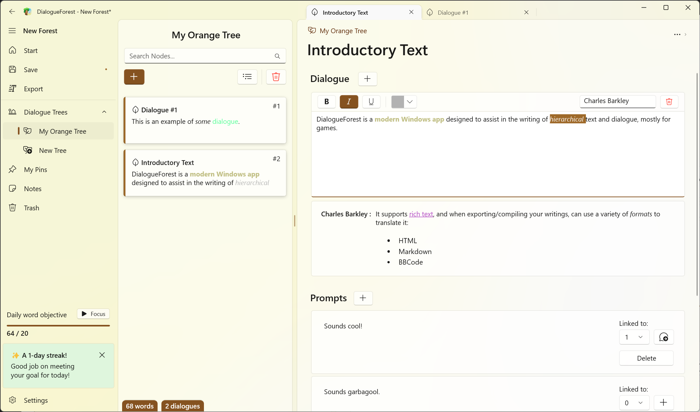
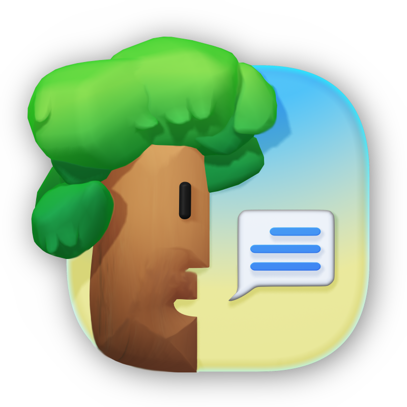
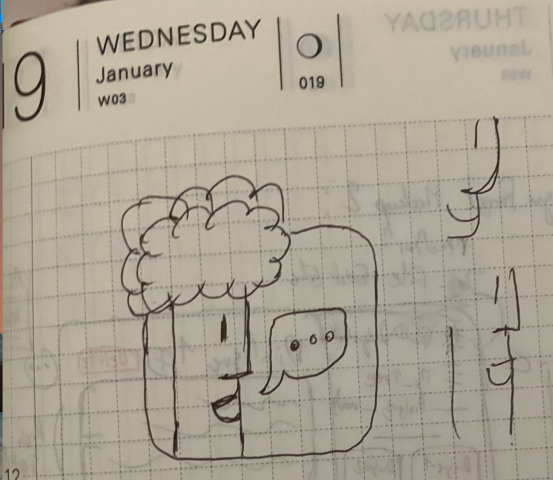
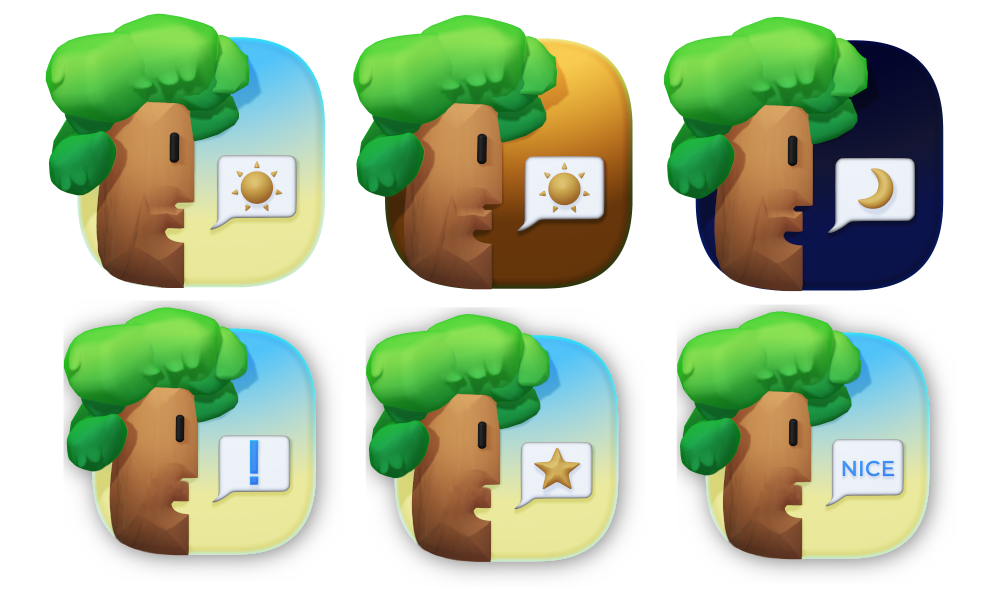
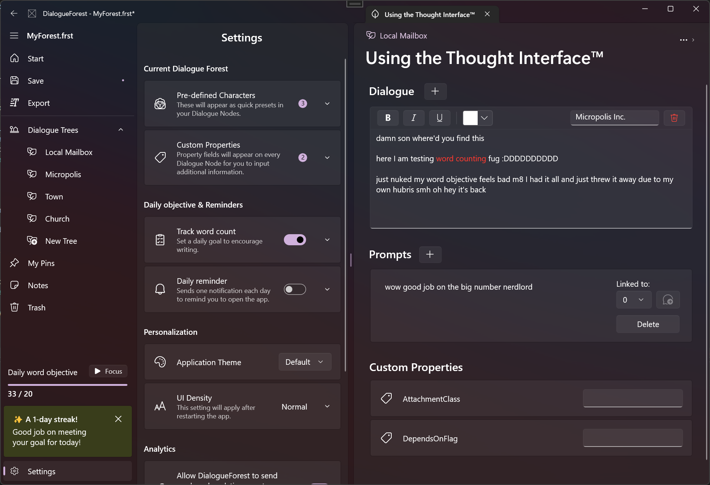
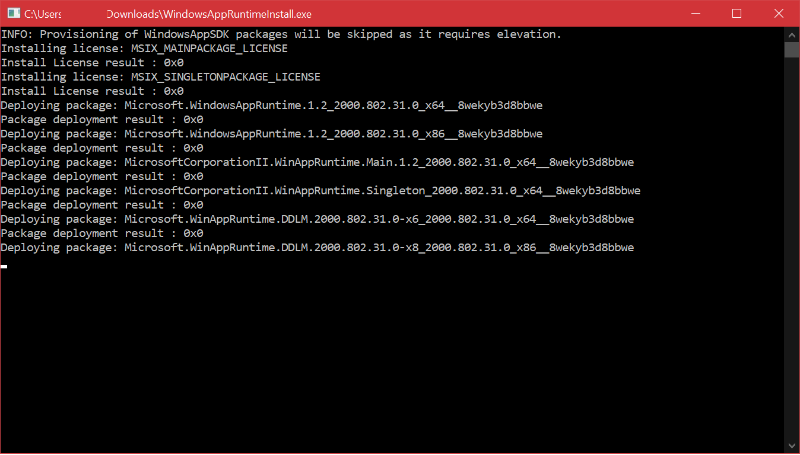

Here's a new certified dfugdrop™️! Let's not talk about how I left it dead for more than a year.

DialogueForest is a (free!) Windows App built on WinUI 3 that allows you to write hierarchical rich text dialogue with custom characters and metadata, sprinkled with some basic productivity features like daily objectives/notifications.
The reasoning behind this app is that I couldn't find a good tool to write medium-length branching dialogue for my burgeoning* gamedev efforts.
Most tools are based on node graphs, which very quickly become unmanageable** if you're trying to write a lot of text.
Check it out on itch.io!
You can also browse the source code here.
I found out that tools like these are called Outliners - I recommend the following SE question if you're looking for other tools like this one. I notably looked at Scrivener for inspiration, but there's no way I was going to remake all of that...
You can read some more of my design/dev thoughts below, as always.
The Icon and UX
I'm quite fond of the whole Dialogue Tree/Forest analogies, and wanted an icon that'd follow that kind of whimsy.
This one is very obviously inspired by the classic Mac Alert Icon with a dash of Whispy Woods -- I didn't think I had good enough 3D/Spline skills to make a "mascot" icon like all the cool guys do, but it turned out alright!

Compare it to this jank mockup I scribbled on last year's Hobonichi Techo:

Having a humanized icon makes the app fun, and the speech bubble makes it easy to re-use in a bunch of different scenarios as well:

The evening/night variants were planned for the welcome page to go alongside the time-based greeting, but I ultimately cut them 🤷
The app is laid out in a very personal way this time since I mostly built it for my own use.
I did aim for a three-column layout voluntarily though -- Those layouts have gotten quite popular on macOS, but I've rarely seen them on Windows so far? Even though I think they totally work in WinUI.

It's been a fun experiment to try and design a featureful/"crammed" WinUI app - You really can get a lot going in modern Windows apps now, even without the Compact controls.
Technical Thoughts
DialogueForest started life as an UWP app just like Stylophone, but I moved it to Windows App SDK this year to try the platform out and see if it was usable to ship something.
Since you're reading this, I guess it was! It's still a bit rough*** around the edges though...
The experience kinda sucks for end-users when you look at the WinAppSDK runtime installer:

Now of course I couldve bothered to make a nice MSI/MSIX that'd install the runtimes on its own, but you're not gonna expect me to do this for a free app -- what's next, code signing?
I might eventually upload a packaged version to the MS Store anyway, maybe as a "plus"# paid kind of deal with some junk like GPT integration that writes the dialogue for you? everyone loves them LLMs i am a business genius
Rich Text support was both very easy thanks to included controls and a massive pain because nobody really works with RTF anymore. 🫠
I did do the whole netstandard Core/Viewmodel thing again, so a macOS version is certainly possible later down the line. I doubt I'll make one for something this niche though..
* kindest word I can find for "not moving forward at all"
** my best/previous functioning setup was an excel sheet with macros, so you can guess how messy that was
*** I'm very thankful for WinUIEx!
# would be about as worth it as sonic origins plus, thanks for the game gear games again sega